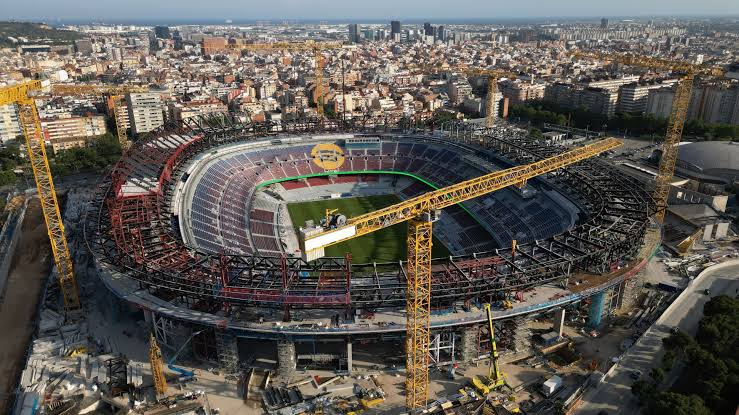

Avanza la remodelación del estadio
Las obras del recinto continúan con miras a ofrecer una mejor experiencia a los aficionados en las próximas temporadas.
Entérate de lo más reciente sobre el club.

Las obras del recinto continúan con miras a ofrecer una mejor experiencia a los aficionados en las próximas temporadas.

La plantilla suma otro triunfo importante gracias al gran nivel mostrado por los jóvenes talentos del club.

La directiva del FC Barcelona comparte actualizaciones sobre los proyectos y planes para la temporada.